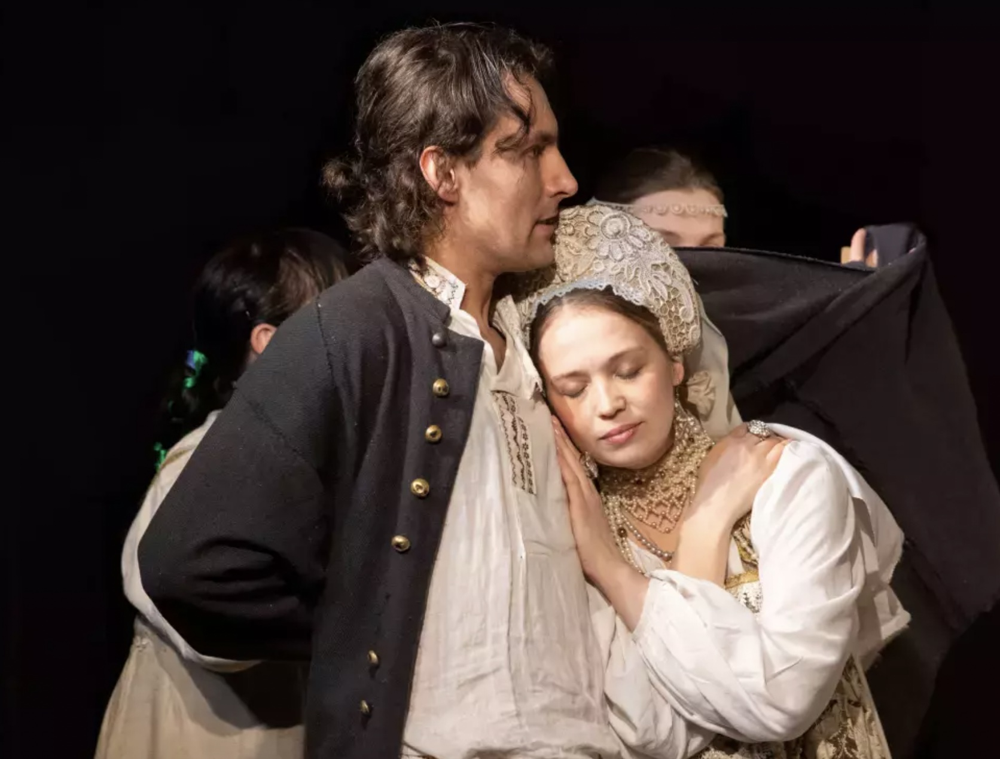

Rogue Tale (aka picaresque novel).
It is a type of prose fiction that follows the adventures of a roguish protagonist who survives in a corrupt society. The word "picaresque" comes from the Spanish word picaresca, which means "rogue" or "rascal".
The Tale of Frol Skobeev, the Rogue (1680)
- Frol is a cunning rogue of lower origins, a rapist
- Anna is a rogue too, who elopes with Frol
- elements of a folk tale (Frol recruits helpers via blackmail and bribery)
- religious items are used for their transactional value, icon can be sold

Fig. 1. Frol Skobeev and Anna (a modern stage production based on the tale (Moscow 2024))